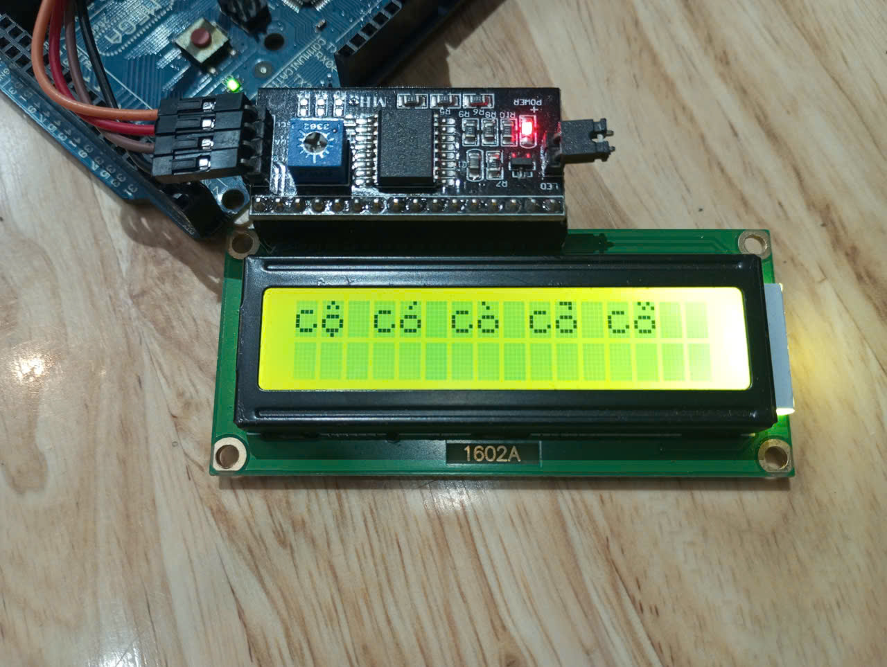
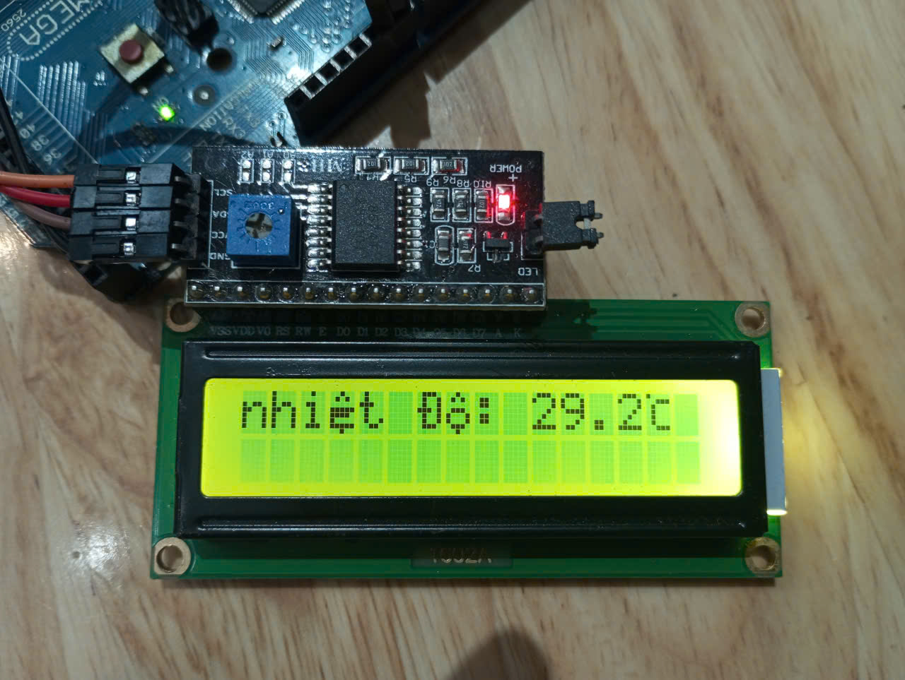
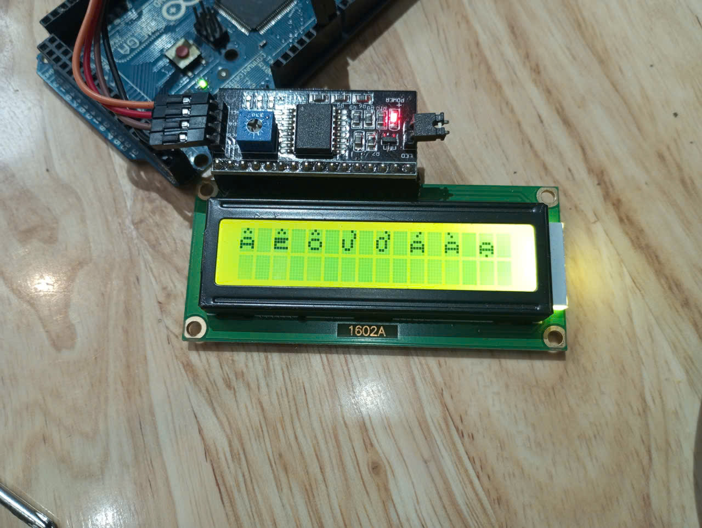
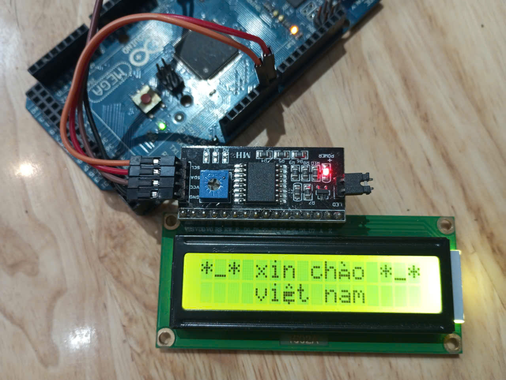

Arduino Library / LCD 16x2 I2C / Tiếng Việt UTF-8
Thư viện VN_LCD
Thư viện Arduino LCD tiếng Việt để in chữ tiếng Việt trên LCD bằng Arduino,
ESP8266 hoặc ESP32. Gõ chuỗi UTF-8 có dấu, gọi lcd.print(),
và để VN_LCD tự dựng glyph phù hợp với ô ký tự 5x8 của HD44780.
Tổng quan nhanh
VN_LCD dành cho LCD 16x2 I2C cần hiển thị tiếng Việt có dấu.
Thư viện nhận chuỗi UTF-8 trực tiếp từ code Arduino, dựng glyph tiếng Việt trong giới hạn
phần cứng của HD44780, và vẫn giữ cách dùng quen thuộc như lcd.print(),
setCursor(), clear(), backlight().
- Chuỗi UTF-8: in tiếng Việt có dấu trực tiếp, không cần tự tách dấu.
- LCD hỗ trợ: LCD 16x2 HD44780 dùng module I2C PCF8574.
- Board hỗ trợ: Arduino Uno, Nano, Mega, ESP8266 và ESP32.
- I2C linh hoạt: dùng I2C mặc định hoặc tự chọn SDA/SCL bằng I2C mềm.
Ảnh thực tế
LCD 16x2 đang hiển thị tiếng Việt từ thư viện VN_LCD.
Các ảnh dưới đây là kết quả chạy thật trên LCD I2C. Ảnh được giữ đúng tỉ lệ gốc để người xem thấy rõ màn hình, dây nối và module PCF8574.




Vấn đề mà VN_LCD giải quyết
LCD 16x2 không biết Unicode. VN_LCD đứng giữa để dịch tiếng Việt thành glyph dễ đọc.
LCD ký tự HD44780 chỉ có ô 5x8 pixel và 8 ô CGRAM cho ký tự tùy chỉnh, nên việc hiển thị đủ dấu tiếng Việt không thể làm giống màn hình đồ họa. VN_LCD chọn hướng thực dụng: nhận chuỗi tiếng Việt UTF-8, chuẩn hóa ký tự, tạo glyph cần thiết và ưu tiên độ rõ nét khi hiển thị trên LCD 16x2.
Nếu bạn đang tìm thư viện arduino LCD tiếng việt hoặc cách in chữ tiếng Việt trên LCD bằng arduino, đây là thư viện tập trung đúng vào nhu cầu đó.
Tính năng chính
Nhỏ gọn cho dự án Arduino, nhưng xử lý đúng những chỗ LCD hay gây khó chịu.
- In tiếng Việt bằng
lcd.print(): gõ chuỗi UTF-8 trong Arduino IDE hoặc VS Code rồi in trực tiếp. - Tự tạo glyph trong giới hạn 5x8: thư viện dựng ký tự tiếng Việt phù hợp CGRAM của HD44780.
- I2C mềm và chân tùy chỉnh: dùng
lcd.begin(sdaPin, sclPin)khi chân I2C mặc định đã được dùng. - Tự quét địa chỉ I2C:
beginWithScan()giúp tìm địa chỉ module LCD khi bạn chưa chắc là0x27hay0x3F. - Xóa vùng nhỏ, ít chớp LCD:
lcd.clear(column, row, length)cập nhật số liệu mà không cần xóa toàn bộ màn hình. - Ký tự độ C và độ F gọn: chuỗi
0Cvà0Fđược chuyển thành ký tự nhiệt độ trong một ô LCD.
Cài đặt
Dùng qua Arduino IDE Library Manager hoặc tải trực tiếp từ GitHub.
- Arduino Library Manager: mở Arduino IDE, vào Library Manager, tìm
VN_LCDvà cài đặt khi thư viện đã được xuất bản. - Add .ZIP Library: tải ZIP từ GitHub, chọn Sketch -> Include Library -> Add .ZIP Library....
- Cài thủ công: chép thư mục
VN_LCDvàoDocuments/Arduino/libraries/VN_LCD, rồi mở lại Arduino IDE.
Cách dùng nhanh
Một đoạn code đủ để in “nhiệt độ” có dấu lên LCD 16x2.
Ví dụ này dùng chân SDA = 7, SCL = 6 và beginWithScan() để tự tìm địa chỉ I2C.
Khi cập nhật số liệu, clear(10, 0, 5) chỉ xóa vùng giá trị nhiệt độ.
#include "VN_LCD.h"
VN_LCD lcd(0x27, 16, 2);
void setup() {
Serial.begin(115200);
if (!lcd.beginWithScan(7, 6, Serial)) {
return;
}
lcd.backlight();
lcd.clear();
}
void loop() {
lcd.setCursor(0, 0);
lcd.print("nhiệt độ:");
lcd.setCursor(10, 0);
lcd.print(25.5, 1);
lcd.print("0C");
delay(1000);
lcd.clear(10, 0, 5);
}Phần cứng hỗ trợ
Tối ưu cho module LCD I2C phổ biến ngoài thị trường.
VN_LCD tự điều khiển HD44780 qua PCF8574, không cần thư viện LCD ngoài. Thư viện phù hợp cho Arduino Uno, Nano, Mega, ESP8266 và ESP32.
| LCD | HD44780 16x2 |
|---|---|
| I2C backpack | PCF8574 / PCF8574A |
| Địa chỉ thường gặp | 0x27 / 0x3F |
| Board | Arduino AVR, ESP8266, ESP32 |
API đáng chú ý
Giữ lại cách dùng quen thuộc của LCD, thêm xử lý tiếng Việt ở bên trong.
begin() |
Khởi động LCD bằng I2C mặc định. |
|---|---|
begin(sdaPin, sclPin) |
Khởi động LCD bằng chân SDA/SCL tùy chỉnh. |
beginWithScan(Serial) |
Tự quét địa chỉ I2C nếu địa chỉ ban đầu chưa đúng. |
print(text) |
In chữ, số và chuỗi tiếng Việt UTF-8. |
clear(column, row, length) |
Xóa một vùng nhỏ để cập nhật nội dung ít chớp hơn. |
clearVietnameseCache() |
Làm mới cache ký tự tiếng Việt trong CGRAM. |
Câu hỏi nhanh
Những điểm nên biết trước khi dùng VN_LCD.
VN_LCD có phải font Unicode đầy đủ cho LCD không?
Không. LCD HD44780 có ô 5x8 pixel và chỉ 8 ô CGRAM, nên VN_LCD ưu tiên chữ rõ và gần đúng trong giới hạn phần cứng.
Có cần viết printVietnamese() không?
Không bắt buộc. Bạn có thể dùng lcd.print("xin chào"). Hàm printVietnamese() chỉ giúp code rõ nghĩa hơn nếu bạn muốn.
Tại sao một vài dấu có thể bị giản lược?
Một ký tự như “ấ” vừa cần phần “â” vừa cần dấu sắc. Trong 5x8 pixel, thư viện có thể bỏ bớt dấu thanh để chữ không bị dính.
Nên dùng bao nhiêu ký tự đặc biệt trên một màn hình?
Mỗi màn hình 16x2 nên dùng tối đa khoảng 8 ký tự tiếng Việt đặc biệt khác nhau vì CGRAM chỉ có 8 ô dùng chung cho cả hai hàng.
Mã nguồn mở
Đưa tiếng Việt lên LCD ký tự mà không phải tự vẽ từng dấu.
Clone repo, mở ví dụ Vietnamese16x2, nối LCD I2C và thử ngay trên board Arduino của bạn.